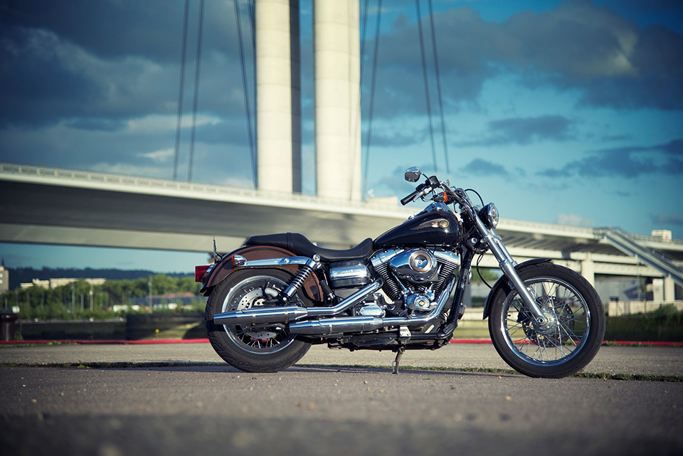

Harley Davidson Dyna Super Glide Custom

La expresión máxima de libertad sobre dos ruedas
La motocicleta que combina potencia, estilo y personalidad en un solo rugido
La Harley Davidson Dyna Super Glide Custom es una verdadera representante del espíritu rebelde y audaz que ha caracterizado a la legendaria marca estadounidense durante décadas. Con su diseño icónico, su potencia deslumbrante y su capacidad de personalización, esta motocicleta se ha convertido en un icono de la libertad sobre dos ruedas.
La Dyna Super Glide Custom es una declaración de estilo audaz. Su aspecto musculoso y agresivo atrae todas las miradas, mientras que sus líneas limpias y su acabado cromado transmiten una sensación de elegancia y robustez. Con su tanque de combustible en forma de lágrima y su horquilla telescópica delantera, esta motocicleta irradia carácter y actitud desde cualquier ángulo.
Pero la Harley Davidson Dyna Super Glide Custom no es solo estilo, también ofrece un rendimiento potente. Equipada con un motor V-Twin de 1584 cc, esta máquina americana libera una potencia y un par motor excepcionales que hacen temblar el pavimento. Cada aceleración se convierte en una experiencia visceral, y el rugido del escape Vance & Hines añade un toque de rebeldía a cada giro del acelerador.
La Dyna Super Glide Custom no solo se destaca por su rendimiento, sino también por su capacidad de personalización. Los apasionados de las dos ruedas pueden adaptar esta motocicleta a su estilo personal mediante una amplia gama de accesorios y opciones de personalización. Desde manillares y asientos hasta sistemas de escape y pintura personalizada, cada propietario puede hacer de esta motocicleta un reflejo único de su individualidad y creatividad.
Además de su apariencia y rendimiento, la Dyna Super Glide Custom ofrece una conducción cómoda y segura. Su posición de conducción ergonómica, el asiento acolchado y la suspensión de alta calidad absorben eficazmente los golpes de la carretera, permitiendo disfrutar de largos viajes sin comprometer la comodidad.
En resumen, la Harley Davidson Dyna Super Glide Custom personifica la esencia de la libertad y la autenticidad que ha hecho de Harley Davidson una de las marcas de motocucltas mas importantes de la hitoria.
La motocicleta Harley Davidson Dyna Super Glide Custom presenta una serie de características distintivas que la han convertido en un ícono de la marca y en una favorita entre los entusiastas de las motocicletas. A continuación se detallan algunas de sus características principales:
Potencia y rendimiento: La Dyna Super Glide Custom está equipada con un potente motor Twin Cam 96 de 1584 cc, que ofrece una entrega de potencia suave y controlada. Este motor de alto rendimiento proporciona una aceleración rápida y una velocidad máxima impresionante, lo que garantiza una experiencia de conducción emocionante y dinámica.
Estilo personalizado: Esta motocicleta se caracteriza por su estilo personalizado y su capacidad de personalización. Los propietarios pueden agregar su toque único mediante una amplia gama de accesorios y opciones de personalización, como manillares, asientos, escapes y pintura personalizada. Esto permite que cada motocicleta sea una expresión individualizada de estilo y personalidad.
Diseño clásico y atemporal: La Dyna Super Glide Custom presenta un diseño clásico y atemporal que se mantiene fiel a las raíces de Harley Davidson. Con líneas limpias, acabado cromado y detalles meticulosos, esta motocicleta captura el espíritu retro y la esencia de la marca.
Manejo y conducción cómoda: La motocicleta ofrece una posición de conducción ergonómica que garantiza la comodidad tanto en trayectos cortos como largos. El asiento acolchado y la suspensión de alta calidad absorben eficazmente los impactos de la carretera, brindando una experiencia de conducción suave y cómoda.
Sistema de escape Vance & Hines: La Dyna Super Glide Custom viene de fábrica con un sistema de escape Vance & Hines, que no solo mejora el rendimiento del motor, sino que también emite un sonido característico y poderoso que añade emoción a la experiencia de conducción.
Frenado y seguridad: La motocicleta está equipada con un sistema de frenos de alto rendimiento que garantiza una capacidad de frenado efectiva y segura. Los frenos delanteros y traseros ofrecen una respuesta rápida y una gran potencia de frenado, lo que brinda confianza al conductor en situaciones de emergencia.
Instrumentación y tecnología: La Dyna Super Glide Custom cuenta con un panel de instrumentos completo que proporciona información esencial al conductor, como velocidad, odómetro, nivel de combustible y luz de advertencia. Además, la motocicleta puede estar equipada con tecnología adicional, como sistemas de navegación y conectividad para una experiencia de conducción aún más moderna.
Estas características distintivas de la Harley Davidson Dyna Super Glide Custom la convierten en una motocicleta impresionante tanto en rendimiento como en estilo. Su combinación de potencia, personalización y calidad de conducción la convierte en una elección popular entre los amantes de las motocicletas que buscan una experiencia única y auténtica en la carretera.
Potencia y rendimiento: La Dyna Super Glide Custom está equipada con un potente motor Twin Cam 96 de 1584 cc, que ofrece una entrega de potencia suave y controlada. Este motor de alto rendimiento proporciona una aceleración rápida y una velocidad máxima impresionante, lo que garantiza una experiencia de conducción emocionante y dinámica.
Estilo personalizado: Esta motocicleta se caracteriza por su estilo personalizado y su capacidad de personalización. Los propietarios pueden agregar su toque único mediante una amplia gama de accesorios y opciones de personalización, como manillares, asientos, escapes y pintura personalizada. Esto permite que cada motocicleta sea una expresión individualizada de estilo y personalidad.
Diseño clásico y atemporal: La Dyna Super Glide Custom presenta un diseño clásico y atemporal que se mantiene fiel a las raíces de Harley Davidson. Con líneas limpias, acabado cromado y detalles meticulosos, esta motocicleta captura el espíritu retro y la esencia de la marca.
Manejo y conducción cómoda: La motocicleta ofrece una posición de conducción ergonómica que garantiza la comodidad tanto en trayectos cortos como largos. El asiento acolchado y la suspensión de alta calidad absorben eficazmente los impactos de la carretera, brindando una experiencia de conducción suave y cómoda.
Sistema de escape Vance & Hines: La Dyna Super Glide Custom viene de fábrica con un sistema de escape Vance & Hines, que no solo mejora el rendimiento del motor, sino que también emite un sonido característico y poderoso que añade emoción a la experiencia de conducción.
Frenado y seguridad: La motocicleta está equipada con un sistema de frenos de alto rendimiento que garantiza una capacidad de frenado efectiva y segura. Los frenos delanteros y traseros ofrecen una respuesta rápida y una gran potencia de frenado, lo que brinda confianza al conductor en situaciones de emergencia.
Instrumentación y tecnología: La Dyna Super Glide Custom cuenta con un panel de instrumentos completo que proporciona información esencial al conductor, como velocidad, odómetro, nivel de combustible y luz de advertencia. Además, la motocicleta puede estar equipada con tecnología adicional, como sistemas de navegación y conectividad para una experiencia de conducción aún más moderna.
Estas características distintivas de la Harley Davidson Dyna Super Glide Custom la convierten en una motocicleta impresionante tanto en rendimiento como en estilo. Su combinación de potencia, personalización y calidad de conducción la convierte en una elección popular entre los amantes de las motocicletas que buscan una experiencia única y auténtica en la carretera.